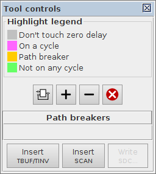
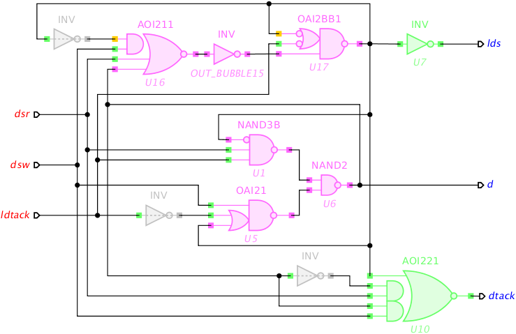
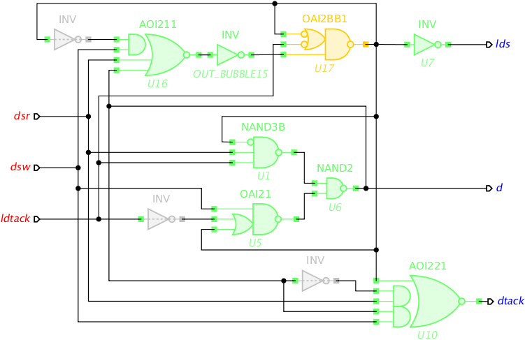
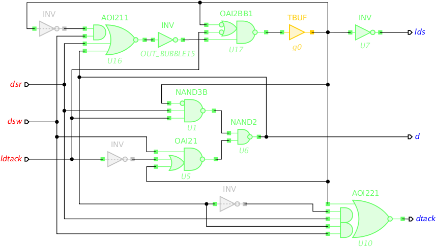
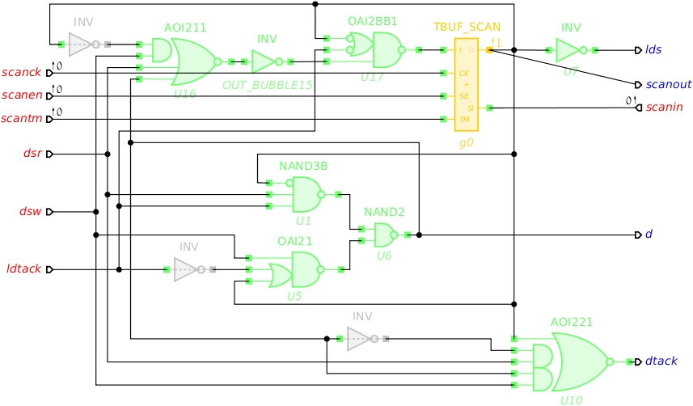

Table of Contents
Loop breaking and offline testing
In this tutorial we will use VME bus controller circuit vme-tm.circuit.work (7 KiB) and its STG specification vme.stg.work (4 KiB) developed in the tutorial Design of VME bus controller – download these files into your working directory.
Cycle analyser
Combinational cycles are common in asynchronous circuits – they (along with latches) usually implement “memory” of the circuit. Verilog netlist for such cyclic circuits, however, may upset conventional EDA tools for timing analysis (e.g. Synopsys PrimeTime) and offline testing (e.g. Synopsys TetraMAX):
- Static timing analysis requires the circuit to be free of combinational cycles and breaks them by disabling some of the timing arcs. The choice of the timing arcs to disable, however, is often difficult to predict and suboptimal, and in particular may cause removal of timing paths that are important for timing analysis, e.g. critical paths.
- Offline testing may also be affected by the combinational cycles as they limit the controlability of the circuit – the ability to set every signal to a specific state via the circuit's primary inputs.
Workcraft introduces a Path breaker property for the component pins to explicitly break the combinational cycles. Interpretation of this property differs for the input and output pins of a gate:
- For each input pin whose Path breaker property is set, a
set_disable_timingconstraint is generated – it disables the timing arcs from that input pin, thus removing timing paths through the pin. These constraints can be dumped into an SDC file and subsequently used to explicitly instruct a timing analysis tool to disable specific timing arcs, rather than rely on its unpredictable arc selection algorithm. Careful selection of the timing arcs for disabling may help to break all the combinational cycles in the circuit while preserving the important/interesting timing paths. This requires creativity from the designer and is not always possible.
- For each output pin whose Path breaker property is set, a special element called testable buffer or testable inverter is inserted. Such testable elements need to be designed and characterised for each gate library, so the timing analysis tool is aware of their path breaking capability. Moreover, the testable elements can be further extended with SCAN features, making asynchronous design compatible with conventional DfT methodology [1].
Note that both ways of dealing with combinational cycles can be combined in the same circuit.
Cycle analyser tool provides a convenient GUI for exploration of loop breaking alternatives. It automates the removal of combinational cycles and the insertion of testing features in asynchronous circuits. Cycle analyser control panel looks as follows:

When the tool is activated, the circuit gates are highlighted using the following scheme (the colours can be adjusted in the preferences of digital circuit model – see Edit→Preferences…→Decoration→Analysis):
- Zero delay gates and their output pins are highlighted grey. This is to indicate that zero delay gates cannot be delayed by inserting testable buffers. Input pins of zero delay gates can still be set as path breakers though.
- Components and pins that lay on a cycle are highlighted magenta.
- Pins whose Path breaker property is set are highlighted orange. Components with path breaker pins are also highlighted orange.
- Components and pins that do not belong to any cycle are highlighted green.
Path breakers table enumerates the pins whose Path breaker property is set. Note that Path breaker property of a pin can be toggled while in Cycle analyser tool by clicking the corresponding pin; clicking on a gate toggles Path breaker property of its only output. The change is immediately visualised via updated highlighting of components and pins. This enables convenient exploration of possible cycle breaking strategies.
Cycle analyser also provides several ways of changing Path breaker property for a group of output pins (input pins are not affected by these actions):
- - Tag Path breaker property for output pins of components with feedback loops. Note that feedback loops via zero-delay inverters or buffers are also included.
- - Set Path breaker property of output pins as necessary to break all the cycles in the circuit.
 - Clear Path breaker property of output pins that are redundant for breaking all cycles in the circuit.
- Clear Path breaker property of output pins that are redundant for breaking all cycles in the circuit.- - Clear Path breaker property for all the pins.
Once all the cycles are broken by strategically assigning the Path breaker property to the pins, the buttons at the bottom of the tool panel are used as follows:
- Insert TBUF/TINV – insert testable buffers/inverters after output pins with Path breaker property set. Note that insertion of testable buffers is optimised as follows: If the path breaker pin belongs to a buffer (inverter), or if the only gate it drives is a buffer (inverter), then, instead of inserting a new testable gate, that buffer (inverter) is converted into the testable buffer(testable inverter).
By default the testable buffer gate is TBUF with input I and output O; testable inverter gate is TINV with I and ON pins. These names can be changed in Edit→Preferences…→Models→Digital Circuit preferences via Testable buffer name and input-output pins and Testable inverter name and input-output pins settings.
- Insert SCAN – insert SCAN ports and connect them to the testable buffers.
When connecting a gate to scan ports its module name is automatically changed by adding _SCAN suffix. This default suffix can be changed in Edit→Preferences…→Models→Digital Circuit preferences via Scan module suffix setting. By default SCAN primary inputs are called scanck, scanen, scanin, and scanout while the corresponding pins of testable gates are CK, SE, SI, and SO (the latter is only used in multi-output components). These names can also be changed in Edit→Preferences…→Models→Digital Circuit preferences via Scan clock port / pin names, Scan enable port / pin names, Scan input port / pin names and Scan output poert / pin (for multi-output component) names settings.
- Write SDC… – write out an SDC file with
set_disable_timingconstraints for each input pin with Path breaker property set. This button is disabled if there are no input pins with Path breaker property set.
By default the produced SDC file uses the names of gates and pins as they are defined in the Property editor for the corresponding nodes. If necessary, these names can be substituted by providing a conversion file in Edit→Preferences…→Models→Digital Circuit preferences via Substitution rules for export setting. For example, libraries/workcraft-tsmc_ghp.cnv file has rules to convert librarys/workcraft.lib gates to match the naming convention of TSMC GHP library. This is a convenient way to convert a circuit (and its constraints) mapped into one gate library to be used with another library.
Analysis of combinational cycles
Open VME bus controller circuit and activate Cycle analyser tool. Most of the gates are highlighted magenta indicating that they belong to some combinational cycles:

If we would pass this circuit to a static timing analysis tool, it would likely disable the timing arc in gate OUT_BUBBLE15 to eliminate all the cycles. While this is may look like an optimal solution, unfortunately it also removes many important timing paths, e.g. one would not be able to measure the critical delays from dsr and from dsw to lds. Therefore, other methods of dealing with combinational cycles are required.
Disabling timing arcs
As a first exercise, experiment with tagging input pins in VME bus controller as path breakers, trying to eliminate all the combinational cycles. At the same time make sure to preserve all interesting and important timing paths.
For example, if we assume that feedback loops are always short and do not require timing analysis, then the self-loop input pin of gate U17 is an obvious candidate for breaking a cycle. The input of U16 that is driven by a zero delay inverter is another candidate for path breaking as it is not on a critical path. (Alternatively the timing arc in the preceding zero delay inverter can be disabled.) Click both these input pins to set their Path breaker property. The result should look as follows:

It may be tempting to tag the remaining pin on the cycle in gate U16 as a path breaker, and this indeed would eliminate all the cycles. However, this would also break an important path from d to lds while, according to the specification of VME bus controller, d is a trigger of lds (see the causality arc d+→lds+ in the STG below):

Instead, consider input pins in gates U1 and U5 that are on a cycle. These are driven by context signals as all the triggers of output d are primary inputs of the circuit. Therefore the timing paths through this arcs are not critical and the timing arcs from these pins can be safely disabled – click both pins to set their Path breaker property. Now all the gates are highlighted green indicating that there is no more unbroken combinational cycles in the circuit:

The information about disabled timing arcs can now be exported as a set of SDC constraints for subsequent use in the conventional EDA tools – click on the Write SDC… button and save the constraints in vme-tm.circuit.sdc file, which will be as follows:
- vme-tm.circuit.sdc
# Path break SDC file generated by Workcraft 3 (Return of the Hazard), version 3.2.4 set_disable_timing U1 -from AN -to ON set_disable_timing U5 -from A2 -to ON set_disable_timing U16 -from A1 -to ON set_disable_timing U17 -from A2N -to ON
Insertion of testable buffers
Let us now use a different approach to loop breaking and insert testable buffers in every combinational cycle. For this, activate Cycle analyser tool and clear Path breaker properties from all the pins by pressing button.
All the components and pins on a cycle are highlighted magenta. The challenge is to eliminate all the cycles by setting Path breaker property of as few output pins as possible. You can try to do this manually by clicking the output pins to toggle their Path breaker property – path breaker pins and components will turn orange and the ones that become not on a cycle turn green.
You can also rely on the automatic loop breaking: press for eliminating all the remaining cycles or for discarding redundant path breaker pins.
Interestingly, setting Path breaker property for the output pin of a single gate U17 is sufficient to eliminate all the combinational cycles:

Now insert a testable buffer at the output of U17 by pressing Insetr TBUF/TINV button:

Usually a custom SCAN insertion script is employed at this stage for replacing TBUF and TINV gates by specialised SCAN-enabled components and arranging them into the SCAN chain. A basic alternative to such procedure is implemented in Workcraft. Pressing the Insert SCAN button automatically creates the SCAN chain following a sequence of steps (the names of SCAN ports and pins can be changed in Edit→Preferences…→Models→Digital Circuit preferences):
- Add SCAN ports
scanck,scanen,scantm,scanin, andscanout. - Convert
TBUFandTINVcomponents into their SCAN-enabled alternativesTBUF_SCANandTINV_SCAN, respectively, with additionalCK,SE, andSIpins. - Connect
scanck,scanenandscantmports toCK,SEandTMpins of testable components, respectively. - Arrange testable components in the SCAN chain between
scaninandscanoutports.
The final VME bus controller with SCAN should look as follows:

Note that disabling timing arcs and generation of SDC file can be combined with insertion of testable elements if necessary.
Verification
Insertion of testable buffers and SCAN should not break the circuit. This can be verified in a usual way via Verification menu using the original STG as the environment for the modified circuit – all the standard verification properties, namely Conformation, Deadlock freeness, and Output persistency should pass.
Note that the will be warnings about unused scanout output and about dead places associated with scanck, scanen, scantm, scanin ports. Both warnings are expected and can be safely ignored. Indeed, the behaviour of SCAN output is not specified in the mission-mode STG, and all the SCAN input ports are intentionally forced low, i.e. their Init to one property is unset and their Set function is assigned to constant 0.
Solutions
Download all the Workcraft models discussed in this tutorial here:
Circuit models (32 KiB)
===== Feedback =====
- As discussed in https://www.dokuwiki.org/plugin:include#controlling_header_size_in_included_pages, by default, the headers in included pages start one level lower than the last header in the current page. This can be tweaked by adding an empty header above the include:\\
====== ====== {{page>:tutorial:feedback&inline}} - For offline help generation the content of
feedbackpage should be temporary wrapped in<WRAP hide>. Note that the headers still propagate to the table of contents even if inside the hidden wrap. Therefore the Feedback title needs to be converted to something else, e.g. to code by adding two spaces in front.